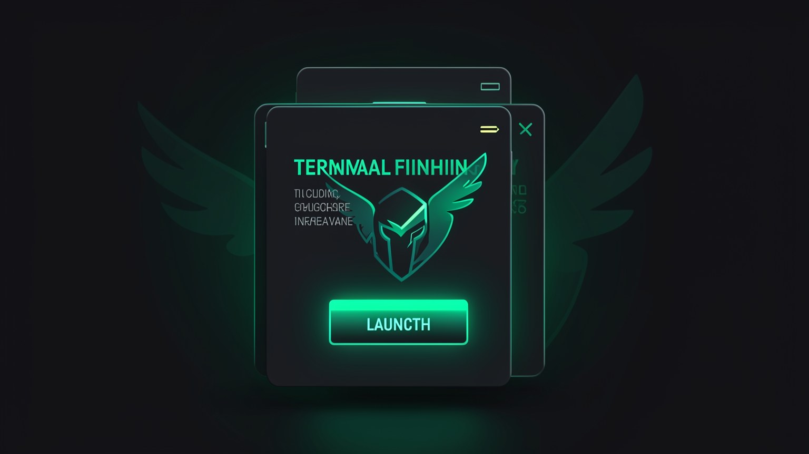

🔌 Connect the local model to the Hermes Agent
You already have the brain (qwen3-coder-64k), and now comes the body: the Hermes Agent. In this module, you install/update Hermes, point it to your local model, and prove that everything runs 100% on your machine — with no calls to the cloud.
🌐 What the Hermes Agent is
O Hermes Agent and the "AI OS" we saw in Track 1: the home where memory, skills, connections, and agents live. It's open-source, with MIT license, maintained by Nous Research. Under the hood, Hermes needs a model to do the reasoning — and this is where your qwen3-coder-64k comes in.

New here? "Open-source" means the code is open for anyone to see and use. The "MIT License" is one of the most permissive licenses: you can use, copy, and even modify it commercially, as long as you keep the attribution notice. It’s the opposite of a closed black box.
Key concepts
The AI OS that connects memory, skills, and models.
Open-source code and a permissive license.
The organization behind Hermes.
Hermes reasons using the model you point it to.
⬇️ Install / update Hermes
With Hermes already on the system, the command that ensures you have the latest version is hermes update. In the video, after it, the dashboard appears "HERMES IS READY" with the button Launch Hermes — a sign that the agent is ready to open.
🎯 Objective
Update Hermes to the latest version and confirm it’s ready.
hermes updateHow to verify: when it’s done, the panel appears HERMES IS READY with Launch Hermes. If you want a quick status check at any time, run hermes status.

Key concepts
Update Hermes to the latest version.
Panel that confirms it’s ready.
Button that opens the agent.
Quick check of the current state.
🔗 Select the local model
This part is in the Hermes interface, not in the terminal. In the model selector, you choose a local model instead of a cloud one — in our case, the qwen3-coder-64k that we created in module 2.4. Once selected, the active model appears in the bottom-right corner of the screen.
🖱️ Steps in the interface (faithfully described from the video)
Open the model selector
In Hermes, open the model list. Local models (from Ollama) appear alongside cloud models.
Choosing qwen3-coder-64k
Select the local model you created. It’s what gives the agent 64k of context.
Confirm in the bottom-right corner
The active model appears in the bottom-right corner. If it shows the name of your local model, the connection is set up.
Honesty: the exact menu names may change between Hermes versions. What matters is the flow—open the selector, choose a model local, and see its name in the lower-right corner. There is no "CLI flag" for this: it's an action in the interface.
Key concepts
Where you choose local or cloud in the UI.
The Ollama one (qwen3-coder-64k), not the cloud one.
Where the active model is displayed.
Connect and click, don’t type a command.
📏 The 64k requirement
Now it’s clear why we did the work for module 2.4. Hermes needs a large window to fit the agent system—instructions, memory, tool descriptions, and conversation history. If you point it to a model with a short context window, the agent freezes or forgets things along the way.
Everything the agent needs to remember (instructions, tools, memory, and conversation) shares the same window. With 64k, there's room to spare; with a short context, the window fills up and the agent loses track — exactly the problem qwen3-coder-64k solves.
💡 Practical tip
If the agent starts ignoring instructions or "loses its way" midway through a task, suspect the context. Check that the selected model is the 64k one (not the chat one) by looking at the bottom-right corner.
Key concepts
Instructions + tools that take up context.
A short context fills up and the agent forgets.
The 64k model exists to power Hermes.
Selecting the chat one locks up the agent.
🩺 Troubleshooting when something doesn't add up
If the connection seems off, Hermes gives you two health-check commands. The hermes status shows the overall status; the hermes doctor does a deeper check and points out common issues. These are the first places to look before changing anything else.
🎯 Objective
Check Hermes’s status and run a diagnostic when the model connection doesn’t seem right.
hermes status
hermes doctorHow to verify: hermes status summarizes the current state; hermes doctor lists checks and flags anything out of place. If it points something out (e.g., Ollama is unreachable), fix that first and run it again.
✓ Before asking for help
- ✓Is Ollama running? (
ollama listresponds) - ✓The 64k model appears in
ollama list? - ✓Does the bottom-right corner show the local model?
- ✓
hermes doctorno red alerts?
✗ Common pitfalls
- ✗Ollama is closed: Hermes can’t find the model.
- ✗You selected the chat model, not the 64k one.
- ✗RAM at its limit: the model won’t even load.
- ✗Forgot the
hermes updateand is running an old version.
Key concepts
Summary of the agent's state.
In-depth check; points out problems.
Prerequisite: the service needs to be up.
Fix the alert and run the doctor again.
✅ Test the connection (100% local)
The final test is simple: with the local model selected, send a “hi” to the agent. If it responds, you have an agent running entirely on your machine. The privacy proof comes next: disconnect from the internet and send another message—if it keeps responding, nothing was being sent to the cloud.
Send a "hi"
With qwen3-coder-64k active, write a simple message and watch the response arrive.
Disconnect from the internet
Turn off Wi-Fi (or unplug the cable). This is the “Vault mode” test we’ll see in Track 3.
Send another message
If the agent still responds without a network connection, that proves everything runs locally and nothing leaked.
🎉 What you just built
A complete agent—Hermes + Ollama + qwen3-coder-64k—reasoning 100% on your machine, for free and without internet. This is the heart of the course. In Track 3, you’ll use this foundation in real projects.
Key concepts
The fastest way to validate the connection.
No network, and it still responds = proof it runs locally.
Disconnecting is the foundation of air-gapped mode.
Hermes + Ollama + 64k model together.
Optional self-check: What’s the best proof that the agent runs 100% locally?
🎯 Module summary
Next module:
2.6 — Desktop app, terminal, and Telegram